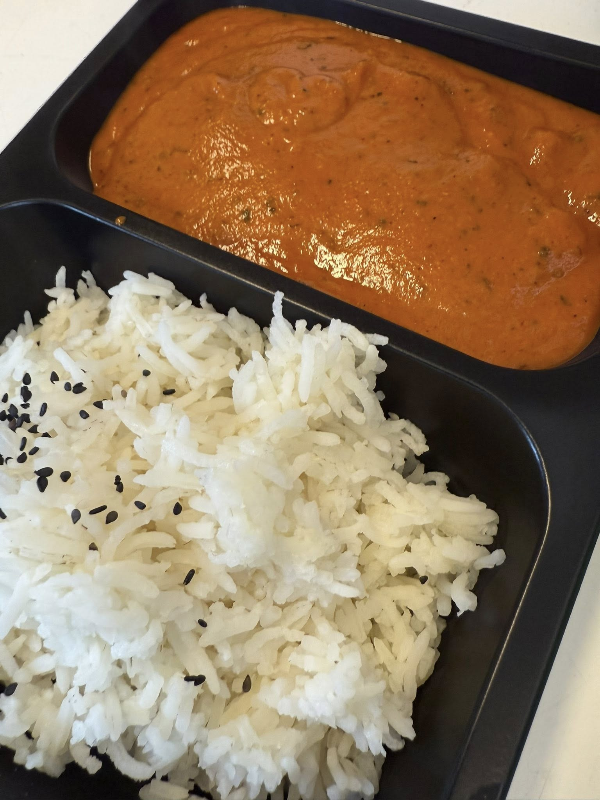
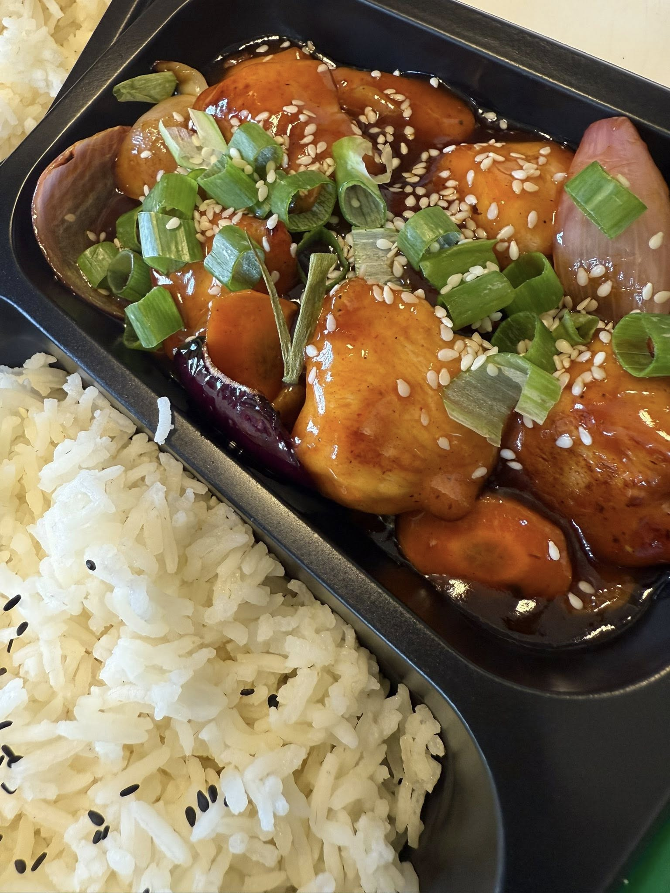

Galeria
Co u nas zjesz?


O nas
Nasza restauracja indyjska to miejsce, gdzie pasja do gotowania spotyka się z bogactwem indyjskiej kultury i tradycji kulinarnej. Inspirujemy się autentycznymi recepturami, które od pokoleń są częścią indyjskiej kuchni, aby tworzyć dania pełne smaku i aromatu. Każde danie przygotowujemy z najwyższą starannością, wykorzystując świeże składniki i oryginalne przyprawy sprowadzane prosto z Indii. Dzięki temu możecie odkrywać prawdziwe smaki orientu i najlepszej jakości produkty w Kórniku. Dla miłośników klasyków oferujemy kebab rzemieślniczy, czyli całe płaty soczystego mięsa. Zadbaliśmy o najwyższą jakość, bo zasługujesz na więcej niż zwykły kebab! Oferujemy mięso z karkówki i kurczaka, a przy tym autentyczność i smak, który zapamiętasz na długo. W naszej restauracji panuje ciepła i przyjazna atmosfera, która sprawia, że każdy czuje się jak w domu. Niezależnie od tego, czy jesteś wielbicielem kuchni indyjskiej czy kebabu, u nas znajdziesz coś, co zachwyci Twoje podniebienie.
Zamów
Pon
ZAMKNIĘTE
Wt
12:00-22:00
Śr
12:00-22:00
Czw
12:00-22:00
Pt
12:00-22:00
Sb
12:00-22:00
Nd
12:00-22:00
321 654 987
| Pon | ZAMKNIĘTE |
|---|---|
| Wt | 12:00-22:00 |
| Śr | 12:00-22:00 |
| Czw | 12:00-22:00 |
| Pt | 12:00-22:00 |
| Sb | 12:00-22:00 |
| Nd | 12:00-22:00 |
321 654 987
Znajdź nas tutaj!
restauracja.sonada@gmail.com
+48 321 654 987
made by: wncksites